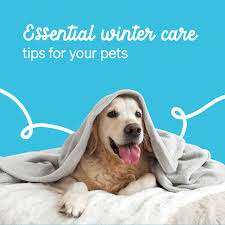

Adoption Event Highlights
Our recent adoption event was a huge success! Read about the happy families and pets.

Stay updated with the latest news, stories, and tips from our animal shelter.
Our recent adoption event was a huge success! Read about the happy families and pets.

Learn how to keep your furry friends healthy and happy with these essential tips.
Stay tuned for the latest news and updates from our shelter!